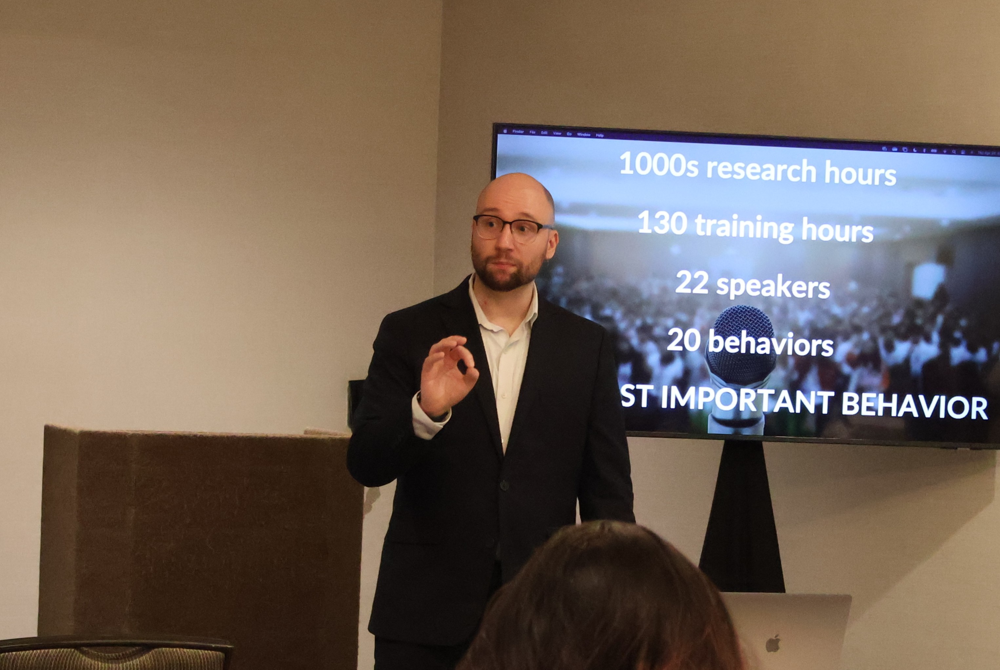

Dr. Matthew Laske is an Organizational Behavior Scientist at the Institutes for Behavior Resources, Inc. (IBR), where he applies behavioral science to organizational performance, occupational safety, leadership, and communication.
Dr. Laske earned his Ph.D. in Behavioral Psychology from the University of Kansas under the advisement of Dr. Florence DiGennaro Reed. He earned his M.A. in Industrial-Organizational Psychology and Human Resource Management, with a Graduate Certificate in Data Analytics, from Appalachian State University under Dr. Tim Ludwig, and his B.S. in Behavioral Science from Western Michigan University.
Prior to joining IBR, Dr. Laske served as an Assistant Professor and Director of the Organization and Communication Sciences Laboratory in the Department of Behavior Analysis at the University of North Texas, where he taught across undergraduate, master's, and doctoral programs and mentored students in organizational and communication sciences. He also worked as a Behavioral Safety and Data Specialist at Eastman Chemical Company, where he helped design and implement organizational processes that significantly reduced workplace injuries.
He co-authored the book The Science and Best Practices of Behavioral Safety and has published ten peer-reviewed articles and eight book chapters on topics including occupational safety, organizational change, organizational behavior management, behavior-based training, and public speaking and scientific dissemination. He has presented at more than 50 conferences, workshops, and trainings across the U.S. and internationally, including invited presentations for organizations such as Marathon Petroleum and Eastman Chemical.
His contributions to organizational outcomes have been widely recognized. He was named a 2025 Rising Star of Safety by the National Safety Council and received the inaugural Aubrey Daniels Outstanding Applied Intervention Award from the OBM Network. He was also honored with the Baer, Wolf, and Risley Outstanding Graduate Student Award and the Applied Behavioral Science Graduate Award for Excellence in Research from the University of Kansas, and the KansABA Distinguished Service Award.
Dr. Laske serves on the Editorial Board of the Journal of Organizational Behavior Management and as an Advisor to the Cambridge Center for Behavioral Studies (CCBS). He previously served as an Associate Commissioner for the CCBS Behavioral Safety Accreditation Commission and as a CCBS Distinguished Scholar. He has also served as emcee for the OBM Network conference at TxABA (2024).